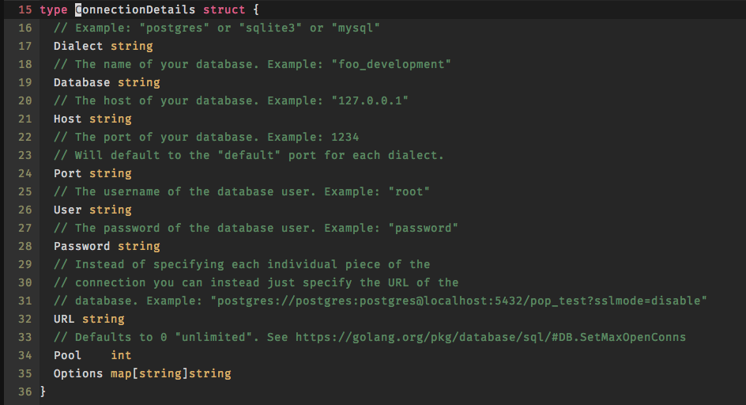

@(Go语言)
这几天被数据库迁移折腾的半死,几乎把gayhub上面的一些Star数高一些的都使用了个遍.mattes/migrate虽然星星数多,但是说实在的并不怎么样,反倒是gorm的AutoMigrate最简单实用,就在准备放弃的时候,看到了一篇Povilas Versockas的一篇关于Go schema migration tools的对比文章.顺藤摸瓜,终于找到一个非常满意的Migrate Tool:markbates/pop,可惜作者repository已经不更新了,于是乎就找到了接盘侠:gobuffalo/pop,讲到这顺带推荐下作者的Web Development Tool gobuffalo/buffalo,非常友善的DSL,仿佛是在用go写rails,好吧,感觉有点跑偏了,下面就进入正题
这个就没啥好说的了,主要注意下,默认是不支持sqlite3的,如果需要的话请自己添加tag
正常版:
go get github.com/gobuffalo/pop/...
go install github.com/gobuffalo/pop/soda
支持sqlite3
go get -u -v -tags sqlite github.com/gobuffalo/pop/...
go install github.com/gobuffalo/pop/soda
使用soda g config即可生成配置文件database.yml
soda g config
特别注意:
1.配置文件的位置需要注意下,必须是config/database.yml或者database.yml
2.需要设置时区等需要使用URL模式
3.作者的本意应该是以后可以通过Options进行更多配置,但是目前出了有人merge了一个migration_table_name: migrations用于更改数据库默认表明schema_migrations之外好像没其它作用

Example Configuration File
development:
dialect: "postgres"
database: "your_db_development"
host: "localhost"
port: "5432"
user: "postgres"
password: "postgres"
test:
dialect: "mysql"
database: "your_db_test"
host: "localhost"
port: "3306"
user: "root"
password: "root"
staging:
dialect: "sqlite3"
database: "./staging.sqlite"
production:
dialect: "postgres"
url: {{ env "DATABASE_URL" }}
然后只需要在main.go(或者你自己的db init)里面执行Connect即可
db, err := pop.Connect("development")
if err != nil {
log.Panic(err)
}
Available Commands:
create Creates databases for you
drop Drops databases for you
generate
help Help about any command
migrate Runs migrations against your database.
schema Tools for working with your database schema
soda create -a
会根据database.yml的配置生成全部的数据库,含dev,production,test等
当然可以指定environment
soda create -e development
相反的删除数据库用drop操作
soda drop -a
soda drop -e development
soda generate model user name:text email:text
会生成model文件跟测试文件,同时还有数据库迁移fizz文件.
models/user.go
models/user_test.go
migrations/20170115024143_create_users.up.fizz
migrations/20170115024143_create_users.down.fizz
到这是不是感觉跟rails g model超像的.
下面是model字段支持的类型:
友情链接: Fizz支持的类型
默认生成的是fizz文件,如果需要后缀为sql的文件,可以根据–migration-type 指定
soda generate model user name:text email:text --migration-type sql -e development
models/user.go
models/user_test.go
migrations/20170115024143_create_users.postgres.up.sql
migrations/20170115024143_create_users.postgres.down.sql
有别于model,如果不指名model则是生成migraton文件并不会生成model文件
soda generate sql name_of_migration
./migrations/20160815134952_name_of_migration.up.sql
./migrations/20160815134952_name_of_migration.down.sql
通过up/down 即可对数据库进行迁移操作
soda migrate up
soda migrate down
最后我们看下fizz文件:
create_table("users", func(t) {
t.Column("email", "string", {})
t.Column("twitter_handle", "string", {"size": 50})
t.Column("age", "integer", {"default": 0})
t.Column("admin", "bool", {"default": false})
t.Column("company_id", "uuid", {"default_raw": "uuid_generate_v1()"})
t.Column("bio", "text", {"null": true})
t.Column("joined_at", "timestamp", {})
})
create_table("todos", func(t) {
t.Column("user_id", "integer", {})
t.Column("title", "string", {"size": 100})
t.Column("details", "text", {"null": true})
t.ForeignKey("user_id", {"users": ["id"]}, {"on_delete": "cascade"})
})
是不是觉得这个DSL非常友善,一目了然,赶紧在你的项目当中用上吧~
好了上面的Migrate讲完了,我们接下来讲下ORM操作,其实发现这个package真的是无心插柳.原本只是非常中意它的Migrate,但是后面使用中竟然发现它的ORM竟然意外的好用,个人感觉不亚于gorm,xrom,毕竟每个orm都是精华,这个package给我的感觉就是Active Record的既视感,忘了说它的底层是基于sqlx,一个我非常喜欢的轻量级的sql库
db, err := pop.Connect("development")
if err != nil {
log.Panic(err)
}
user := User{}
err := db.Find(&user, id)
err := db.All(&users)
user := User{}
err := db.First(&user)
err := db.Last(&user)
err = db.Where("id in (?)", 1, 2, 3).Where("foo = ?", "bar").All(&users)
query := db.Order("name desc")
query := models.DB.LeftJoin("roles", "roles.id=user_roles.role_id").
LeftJoin("users u", "u.id=user_roles.user_id")
count, _ := query.Count(models.UserRole{})
count, _ := query.CountByField(models.UserRole{}, "*")
// page: page number
// perpage: limit
query := db.Where("name = 'Mark'").Paginate(page, perpage)
创建Record
// Create one record.
user := models.User{}
user.Name = "Mark"
err := tx.Create(&user)
// Create many records.
users := models.Users{
{Name:"Mark"},
{Name: "Larry"},
}
err := tx.Create(&users)
保存Record
如果ID为空，Save方法将尝试创建Record。 如果有一个ID集，它将尝试用数据库中的该ID更新该Record。
// Save one record.
user := models.User{}
user.Name = "Mark"
err := tx.Save(&user)
// Save many records.
users := models.Users{
{Name:"Mark"},
{Name: "Larry"},
}
err := tx.Save(&users)
更新Record
// Update one record.
user := models.User{}
user.Name = "Mark"
err := tx.Create(&user)
user.Name = "Mark Bates"
err = tx.Update(&user)
// Update many records.
users := models.Users{
{Name:"Mark"},
{Name: "Larry"},
}
err := tx.Create(&users)
users[0].Name = "Mark Bates"
users[1].Name = "Larry Morales"
err := tx.Update(&users)
删除Record
// Destroy one record.
user := models.User{}
user.Name = "Mark"
err := tx.Create(&user)
err = tx.Destroy(&user)
// Destroy many records.
users := models.Users{
{Name:"Mark"},
{Name: "Larry"},
}
err := tx.Create(&users)
err = tx.Destroy(&users)
目前支持的annotation有如下:
type User struct {
ID uuid.UUID
FavoriteSong Song `has_one:"song"`
}
type Song struct {
ID uuid.UUID
Title string
UserID uuid.UUID `db:"u_id"`
}
type User struct {
ID uuid.UUID
Books Books `has_many:"books"`
}
type Book struct {
ID uuid.UUID
Title string
User User `belongs_to:"user"`
UserID uuid.UUID
}
type User struct {
ID uuid.UUID
Houses Addresses `many_to_many:"users_addresses"`
}
type Address struct {
ID uuid.UUID
Street string
HouseNumber int
}
type User struct {
ID int64
Books Books `has_many:"books" order_by:"title asc"`
FavoriteSong Song `has_one:"song" fk_id:"u_id"`
}
Pop允许为模型中定义的关联执行加载。 通过使用pop.Connection.Eager()函数和模型中预定义的一些字段标记，从模型中提取相关数据。
用上面Relationship的例子来看:
type User struct {
ID int64
Books Books `has_many:"books" order_by:"title asc"`
FavoriteSong Song `has_one:"song" fk_id:"u_id"`
}
u := Users{}
// 预加载用户名为`Mark`的Books,FavoriteSong
err := tx.Eager().Where("name = 'Mark'").All(&u)
// 指定需要预加载的项,例如只加载Books
err = tx.Eager("Books").Where("name = 'Mark'").All(&u)
嵌套关联预加载
//加载所有的书籍，并且对于每一本书籍都会加载与之对应的用户
tx.Eager("Books.User").First(&u)
Callbacks能让我们在orm的基础上加入我们自己的Cache或者Redis,预处理Password加解密等等操作,具体的操作我就不做过多的解释了,目前支持的钩子有如下:
示例:
type User struct {
ID uuid.UUID
Email string
Password string
}
func (u *User) BeforeSave(tx *pop.Connection) error {
hash, err := bcrypt.GenerateFromPassword([]byte(u.Password), bcrypt.DefaultCost)
if err != nil {
return errors.WithStack(err)
}
u.Password = string(hash)
return nil
}